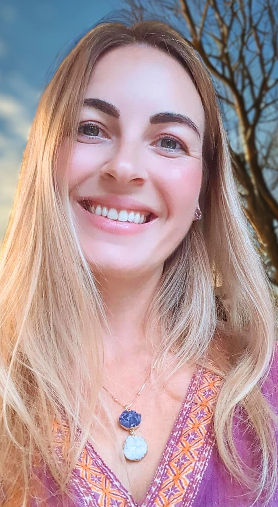

Sobre Mim
Conheça mais sobre a minha jornada e a essência que me trouxe até aqui.
Conheça mais sobre a minha jornada e a essência que me trouxe até aqui.
Astróloga, terapeuta multidimensional e facilitadora de curas energéticas e vibracionais.
Cresci em um lar religioso, com muitos dogmas e regras — e por muitos anos, aquilo não fazia sentido para mim. Sentia que havia algo além... mas ainda não sabia o quê.
Levei tempo para encontrar uma espiritualidade viva, real — que não viesse do medo, mas da presença. Uma conexão que não exigisse perfeição, mas aceitação.
Meu caminho não foi fácil — e tenho orgulho disso. Passei por dores profundas, perdas, traumas, solidão, silêncio, escassez, abusos. Tudo isso me forjou. Tudo isso me trouxe até aqui. Mas nada disso me define.
Aprendi que essas histórias não são quem eu Sou — são apenas as portas pelas quais encontrei o meu Eu verdadeiro.
Foi com a chegada dos meus filhos que esse chamado interior se intensificou.
O desejo de ser uma mãe mais consciente me levou a buscar…
E nessa busca, encontrei a meditação como portal.
Hoje, é no silêncio que eu escuto. É na escuta sutil que a minha alma se alinha. É na presença que tudo faz sentido.
Ao longo do caminho, minha sensibilidade se expandiu.
Meus dons psíquicos despertaram.
A paranormalidade, antes silenciada, encontrou espaço para florescer com liberdade e direção.
Já me mudei muitas vezes. E em cada lugar, um novo espelho.
Quando vivi sobre uma linha de Plutão em Portugal, experimentei uma morte interior profunda —
e um renascimento essencial.
Hoje, vivo sobre uma linha de Júpiter na Inglaterra, que me inspira a expandir, a compartilhar, a viver com sabedoria e fé.
Minha missão é segurar o espaço sagrado para quem está despertando.
É acompanhar aqueles que atravessam limiares internos, com leveza e verdade.
É ajudar almas a se reconectarem com o que são por trás das histórias, dos medos, das conquistas e das dores.
Eu não caminho na sua frente. Caminho ao seu lado.
Lembrando você daquilo que, no fundo, já sabe. E acendendo a luz do portal que sua alma já escolheu atravessar.
Se você chegou até aqui, é porque está pronta.
